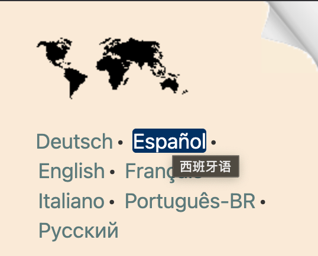

详细信息
本章提供了在HTML中声明语言的的详细信息。
如果元素内容和属性值的语言不同怎么办？
有时，属性中的文本语言和元素内容的语言不同。比如，在本文的右上角有指向页面翻译版本的链接。链接文本使用目标页面的语言，但title属性使用的是当前页面的语言：

如果你的代码如下所示，语言属性会指示内容和title属性文本都是西班牙语。这显然是不正确的。
<a lang="es" title="Spanish"
href="qa-html-language-declarations.es">Español</a>
你应该将包含不同语言文本的属性移动到另一个元素，如下所示，其中a元素继承html元素的默认en设置。
<a title="Spanish" href="qa-html-language-declarations.es"><span lang="es">Español</span></a>
如果没有元素可以挂载你的属性该怎么办？
如果你想指定某些内容的语言但周围没有标签，请在内容周围使用如span、bdi或div之类的元素。比如：
<p>You'd say that in Chinese as <span lang="zh-Hans">中国科学院文献情报中心</span>.</p>
选择语言值
为了确保所有用户代理都能识别你的语言，你需要在提供语言属性值时遵循标准的方法。你还需要考虑如何以标准方式引用方言差异，比如美式英语和英式英语在拼写和发音方面存在显著的差异。
创建语言属性值的规则由名为BCP 47的IETF规范描述。除了如何使用简单的语言标签（如英语的en或法语的fr）外，BCP 47还描述了如何组合语言标签，让你指定与语言相关的地区方言、文字和其他变体。
BCP 47包含ISO的语言和国家代码集，以及其他内容。要查找相关代码，你应该查阅IANA语言子标签注册表。
想了解BCP 47标签的语法，请阅读HTML和XML中的语言标签。如果你想从众多可能的标签和组合中选择正确的语言标签，请参见选择语言标签。
选择正确的属性
如果你的文档是HTML（即作为text/html提供），请用lang属性来设置文档或文本范围的语言。比如，以下将默认语言设置为法语：
<html lang="fr">
当将XHTML 1.x或多语言页面作为text/html提供时，你需要同时使用lang属性和xml:lang属性。xml:lang属性是在XML中识别语言信息的标准方式。确保两个属性的值相同。
<html lang="fr" xml:lang="fr" xmlns="http://www.w3.org/1999/xhtml">如果你将文件作为HTML处理，xml:lang是没有用的，但在你将文档作为XML处理或提供时是有用的。lang属性被XHTML的语法允许，也可能被浏览器识别。但是，当使用其他XML解析器时（例如XSLT中的lang()函数），你不能依赖lang属性被识别。
如果你将页面作为XML提供（即使用诸如application/xhtml+xml之类的MIME类型），你不需要lang属性。xml:lang属性就足够了。
<html xml:lang="fr" xmlns="http://www.w3.org/1999/xhtml">